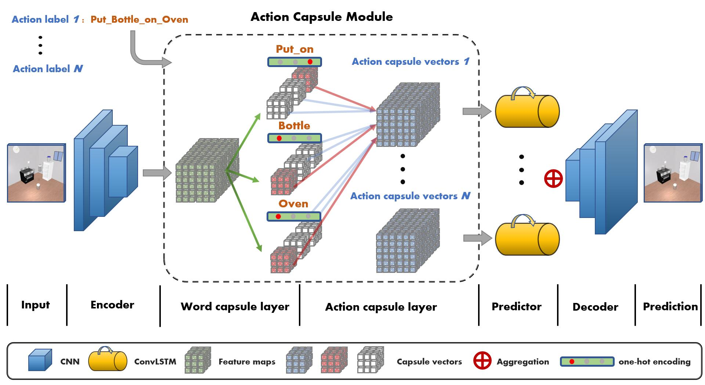

Action Concept Grounding for Semantically Consistent Counterfactual Video
Generation
Preprint. Under review.
Abstract
Recent works in self-supervised video prediction have mainly focused on passiveforecasting and
action-conditional prediction with short-horizon low-level actions,which sidestep the problem of
semantic learning. We introduce the task of semanticaction-conditional video prediction, which can be
regarded as an inverse problemof action recognition. The challenge of this new task primarily lies in
how toeffectively inform the model of semantic action information. To bridge visionand language, we
utilize the idea of capsule and propose a novel video predictionmodel called ACGN, an abbreviation
forActionConceptGroundingNetwork. Ourmethod is evaluated on two newly designed synthetic datasets,
CLEVR-Building-Blocks and Sapien-Kitchen, and experiments show that given different action labels,our
ACGN can correctly condition on instructions and generate correspondingfuture frames without need of
bounding boxes. We further demonstrate our trainedmodel can make out-of-distribution predictions for
concurrent actions, be quicklyadapted to new categories and exploit its learnt features for object
detection.
Action Concept Grounding Network

Quantitative Results

Acknowledgements
To be added after review period.